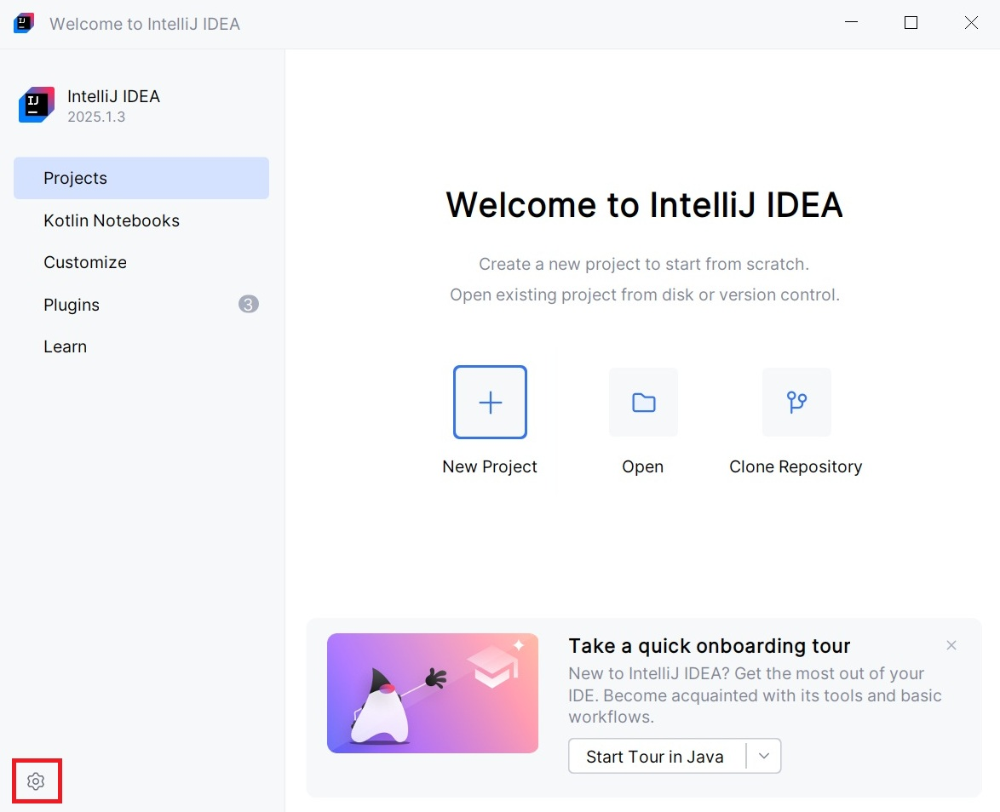
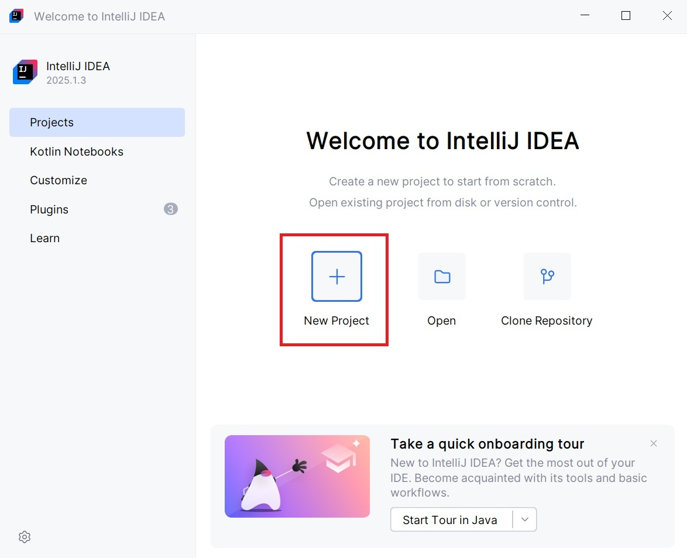
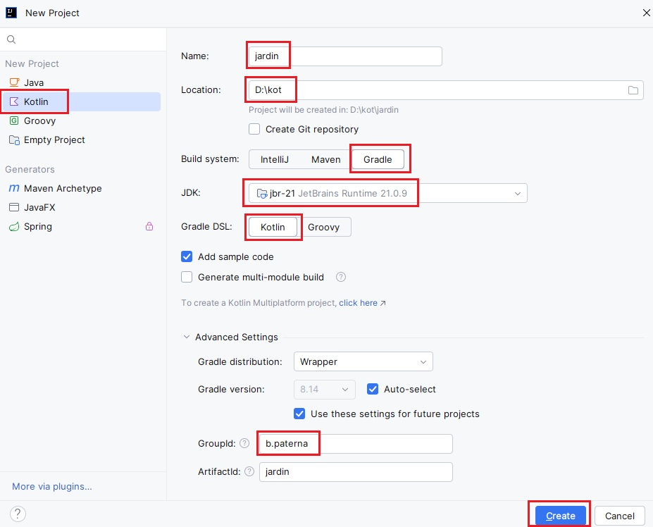
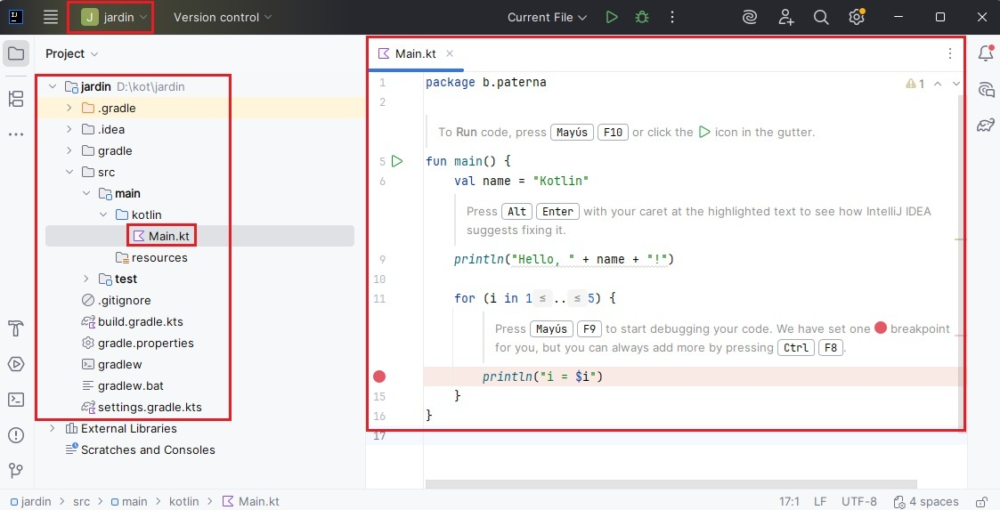

1. Introducción y entorno de desarrollo¶
Revisiones
| Revisión | Fecha | Descripción |
|---|---|---|
| 1.0 | 29-06-2026 | Adaptación de los materiales a markdown |
| 1.1 | 10-07-2026 | Renumeración de apartados |
1.1. Instalación de IntelliJ IDEA Community¶
Para el desarrollo de nuestras aplicaciones utilizaremos el Entorno de Desarrollo Integrado (IDE) IntelliJ IDEA. Para la creación de estos apuntes se ha utilizado la versión 2025.2.6.2 Community Edition (aunque en algunas capturas de pantalla puede verse reflejada otra versión).
Instalación en los ordenadores de clase
Para instalar IntelliJ en el ordenador del aula, sigue estos pasos:
- Descargar los archivos: Accede a la web oficial https://www.jetbrains.com/idea/download/other/ y busca la versión 2025.2.6.2 Community Edition para Linux, luego descarga el archivo
.tar.gz. - Descomprimir y ubicar: Extrae el archivo descargado (que habitualmente se guarda en la carpeta
Descargas) y mueve la carpeta resultante a tu directorio de usuario (fuera de la carpeta temporal de descargas). - Configurar permisos de ejecución:
- Navega hasta la carpeta
bindentro del directorio extraído. - Localiza el archivo ejecutable
idea.sh. - Haz clic derecho sobre él, selecciona Propiedades > Permisos y asegúrate de que la opción Permitir ejecutar el archivo como un programa (o Permet executar) esté marcada.
- Ejecuta el archivo desde la terminal o haciendo doble clic sobre él.
- Navega hasta la carpeta
Instalación en Windows
Para realizar la instalación en tu equipo personal con Windows:
- Descargar el instalador: Accede a la web oficial https://www.jetbrains.com/idea/download/other/ y busca la versión 2025.2.6.2 Community Edition para Windows, luego descarga el archivo
.exe. - Asistente de instalación: Ejecuta el instalador descargado y sigue los pasos indicados en pantalla:
- Directorio de destino: Por defecto se instalará en
C:\Program Files\JetBrains\...(requiere aproximadamente 3.2 GB de espacio en disco). - Opciones de instalación: Se recomienda marcar la opción para crear un acceso directo en el escritorio y, opcionalmente, asociar las extensiones de archivo
.kt(Kotlin). - Menú Inicio: Selecciona la carpeta de destino del menú (por defecto JetBrains) y pulsa Install.
- Directorio de destino: Por defecto se instalará en
- Primer inicio: Al abrir la aplicación por primera vez, acepta los términos de uso y elige si deseas importar configuraciones previas en caso de que ya tuvieras otra versión instalada.
1.2. Proyectos¶
Organización del espacio de trabajo
Antes de empezar a crear programas, es importante que mantengas tu espacio de trabajo organizado. Es recomendable que crees una carpeta raíz en tu unidad de almacenamiento (por ejemplo, una carpeta llamada kot dentro de tu unidad de trabajo) donde guardar de forma ordenada los proyectos del curso.
Consejo de personalización: Puedes cambiar la apariencia del entorno pulsando en el icono de la rueda dentada (Ajustes) en la esquina inferior izquierda de la pantalla de bienvenida. Para estas explicaciones utilizaremos el modo de color claro (Light Mode).

Primer programa y su ejecución
Antes de crear nuestro primer programa, es importante introducir un concepto clave: Gradle. Gradle es un sistema de gestión y construcción de proyectos (denominado build system) que nos permitirá estructurar el proyecto bajo un estándar profesional y nos facilitará la tarea de añadir librerías externas o dependencias sin tener que configurar todo manualmente. Aunque al principio realizaremos programas sencillos utilizaremos Gradle desde el primer día.
Para crear tu primer proyecto en Kotlin con Gradle, abre IntelliJ IDEA y haz clic en New Project en la ventana de inicio, como se muestra en la siguiente imagen:

También puedes crear un proyecto nuevo desde el menú File > New > Project. Elijas el camino que elijas, en ambos casos aparecerá la ventana en la que configurar los parámetros de tu nuevo proyecto. Realiza lo siguiente:
- Marca Kotlin en la columna de la izquierda.
- Name: Indica el nombre de tu proyecto (en el caso del ejemplo es
jardin) - Location: Selecciona tu directorio de trabajo (por ejemplo,
D:\koto la ruta de tu carpeta de usuario). - Build system: Selecciona Gradle.
- JDK: Selecciona la versión disponible de Java instalada en el sistema.
- Gradle DSL: Selecciona Kotlin.
- Marca la opción Add sample code.
- Indica tu inicial seguida de un punto y tu apellido en GroupId dentro de Advance Settings: (en el caso del ejemplo es
b.paterna).
Puedes ver toda esta información en la siguiente imagen:

Ua vez tengas todos los datos, haz clic en Create y espera a que IntelliJ prepare el entorno y sincronice Gradle por primera vez (este proceso puede tardar unos instantes). Cuando termine de preparar el proyecto se habrá creado la carpeta jardin dentro de la carpeta kot y dentro de jardin la estructura de carpetas siguiente:
.idea/.gradle: Carpetas de configuración interna. No deben modificarse manualmente.build.gradle.kts: Es el archivo de configuración de Gradle. En él definiremos el comportamiento del proyecto y las librerías o dependencias externas que queramos descargar de forma automática.src/main/kotlin: Es el directorio raíz donde se almacena todo el código fuente de nuestra aplicación. Es la carpeta más importante del proyecto.Main.kt: Archivo autogenerado (gracias a la opción Add sample code) que contiene el punto de entrada de nuestro programa.
Puedes ver esta información en la siguiente imagen:

Ejecución del programa
Reemplaza la función main del código autogenerado del archivo Main.kt con el siguiente código (que simula un sistema de riego de una planta):
fun main() {
val planta = "Orquídea"
println("¡Bienvenido al sistema de control botánico!")
println("Planta seleccionada en el sistema: $planta")
// Simulación del riego diario (5 días)
for (dia in 1..5) {
println("Día $dia: La planta '$planta' ha sido regada correctamente.")
}
}
Ejecución del programa: Para ejecutar el código escrito, haz clic en el icono verde de Play situado en el margen izquierdo de la función
main(o en la barra de herramientas superior).
El resultado de la ejecución se mostrará inmediatamente en la consola y es el siguiente:
¡Bienvenido al sistema de control botánico!
Planta seleccionada en el sistema: Orquídea
Día 1: La planta 'Orquídea' ha sido regada correctamente.
Día 2: La planta 'Orquídea' ha sido regada correctamente.
Día 3: La planta 'Orquídea' ha sido regada correctamente.
Día 4: La planta 'Orquídea' ha sido regada correctamente.
Día 5: La planta 'Orquídea' ha sido regada correctamente.
Process finished with exit code 0
Si necesitas crear una clase o un nuevo archivo de Kotlin en el futuro sigue estos pasos:
- Haz clic derecho sobre la carpeta donde quieras crear el nuevo archivo.
- Selecciona New > Kotlin File/Class.
- Escribe el nombre para el archivo y selecciona el tipo (File, Class, Interface, etc.).
Compartir y entregar proyectos
Cuando debas entregar una tarea de programación o compartir un proyecto con el profesor, evita subir archivos sueltos. El procedimiento correcto se realiza desde el explorador de archivos de tu sistema operativo:
- Cierra el IDE IntelliJ IDEA para asegurarte de que no haya procesos de escritura activos.
- Localiza la carpeta de tu proyecto (por ejemplo, la carpeta
jardinque se encuentra dentro de tu espacio de trabajokot). - Comprime la carpeta del proyecto en un único archivo comprimido:
- En Windows: Haz clic derecho sobre la carpeta del proyecto y haz clic en Enviar a carpeta comprimida (en zip).
- En Ubuntu: Haz clic derecho sobre la carpeta y haz clic en Comprimir... Seleccionar formato .zip.
- Envía o sube a la plataforma del aula el archivo
.zipresultante.
Cambiar nombre a proyecto
Si por cualquier motivo necesitamos cambiar el nombre a nuestro proyecto deberemos seguir estos pasos, ya que de lo contrario nuestro proyecto puede quedar inconsistente y no ejecutarse:
- Sobre el nombre del proyecto que aparece al lado de su ruta completa hacer clic con el botón derecho del ratón y acceder a
rename. - En la ventana que se abre indicar el nuevo nombre del proyecto.
- En el archivo
settings.gradle.ktscambiar valor derootProject.namepor el nuevo nombre. - Cerrar el proyecto y cambiar el nombre a la carpeta física.
1.3. Organización del código (Packages e Imports)¶
A medida que nuestros programas crecen, escribir todo el código en un único archivo (Main.kt) se vuelve difícil de mantener y de leer. En proyectos reales, el código se divide en diferentes archivos y carpetas. Para entender cómo se comunican estos archivos entre sí, primero veremos un proyecto completo distribuido en varias carpetas y luego explicaremos detalladamente cada uno de los conceptos que lo hacen posible.
Ejemplo: asistente de control de riego
Imagina que estamos desarrollando un asistente para controlar el riego y la humedad de un invernadero. En lugar de tener un solo archivo, hemos estructurado nuestro proyecto de Gradle en tres carpetas (paquetes): modelo, util y app. La estructura de archivos en el panel izquierdo de IntelliJ se ve así:
control_botanico/
└── src/
└── main/
└── kotlin/
├── app/
│ └── Main.kt <-- Coordinador de la aplicación
├── modelo/
│ └── Planta.kt <-- Define qué es una planta
└── util/
└── AsistenteRiego.kt <-- Lógica de cálculo y ayuda
A continuación, se muestra el código de cada uno de los tres archivos:
Archivo 1: src/main/kotlin/modelo/Planta.kt. Este archivo define la estructura de datos básica de nuestras plantas.
package modelo
data class Planta(val especie: String, val humedadIdeal: Int)
Archivo 2: src/main/kotlin/util/AsistenteRiego.kt. Este archivo contiene la lógica de cálculo para evaluar si una planta necesita agua o no.
package util
fun evaluarHumedad(actual: Int, ideal: Int): String {
return when {
actual < ideal - 15 -> "Urgente: Requiere riego inmediato."
actual > ideal + 15 -> "Atención: Suelo encharcado, suspender el riego."
else -> "Humedad adecuada."
}
}
fun bienvenida(nombreJardinero: String): String {
return "¡Hola, $nombreJardinero! Iniciando asistente de control..."
}
Archivo 3: src/main/kotlin/app/Main.kt. Este es el archivo principal que coordina el programa. Para poder usar lo que hemos programado en los otros archivos, tenemos que "traerlo" (importarlo) aquí.
package app
// 1. Importamos la plantilla 'Planta' desde el paquete modelo
import modelo.Planta
// 2. Importamos la función de diagnóstico desde el paquete util
import util.evaluarHumedad
// 3. Importamos la función de bienvenida y le damos un "apodo" o alias
import util.bienvenida as saludar
fun main() {
// Usamos la función de bienvenida mediante su alias
println(saludar("Pol"))
println("----------------------------------------")
// Creamos un objeto Planta
val miHelecho = Planta("Helecho real", 75)
// Simulamos la lectura de humedad de un sensor (al 50%)
val lecturaSensor = 50
val diagnostico = evaluarHumedad(lecturaSensor, miHelecho.humedadIdeal)
// Mostramos los resultados
println("Planta: ${miHelecho.especie}")
println("Humedad registrada: $lecturaSensor% (Humedad objetivo: ${miHelecho.humedadIdeal}%)")
println("Diagnóstico del sistema: $diagnostico")
}
Salida por consola al ejecutar Main.kt:
¡Hola, Pol! Iniciando asistente de control...
----------------------------------------
Planta: Helecho real
Humedad registrada: 50% (Humedad objetivo: 75%)
Diagnóstico del sistema: Urgente: Requiere riego inmediato.
Explicación del ejemplo
¿Qué es un package (Paquete)?
Si observas la primera línea de cada uno de los tres archivos anteriores, verás la palabra reservada package (package modelo, package util, package app). Un package (paquete) es un contenedor lógico y físico (una carpeta) que sirve para organizar y agrupar archivos relacionados y así evitar conflictos de nombres. Por ejemplo, podrías tener una función llamada guardar() en un paquete de base de datos y otra función guardar() en un paquete de interfaz gráfica sin que el compilador se confunda.
Reglas clave de los paquetes:
- La declaración
packagedebe ser la primera línea de código de tu archivo.- Por convención, los nombres de los paquetes se escriben siempre en minúsculas.
- Si los paquetes tienen varios niveles (subcarpetas), en el código los separamos por un punto. Por ejemplo: Si dentro de la carpeta
modelodecidiéramos crear una subcarpeta llamadatipospara organizar mejor las plantas, la ruta física seríamodelo/tipos/y en el código escribiríamos:package modelo.tipos
¿Qué es un import (Importación)?
Por defecto, un archivo de Kotlin no puede ver lo que hay dentro de carpetas o paquetes distintos al suyo. Para solucionar esto y conectar los archivos de nuestro ejemplo, utilizamos la palabra clave import. Un import (importación) le dice al compilador dónde encontrar una clase, función o variable que reside en otro paquete para poder usarla en el archivo actual.
- En
Main.kt(que pertenece al paqueteapp), usamosimport modelo.Plantapara poder declarar una variable de tipoPlanta.
A veces importamos herramientas que tienen nombres muy largos o que coinciden con el nombre de otra función del proyecto. Para evitar conflictos, podemos renombrarlas temporalmente (darles un alias) con la palabra as.
- En nuestro ejemplo:
import util.bienvenida as saludarnos permite llamar a la función escribiendo simplementesaludar("Pol").
Si el paquete util tuviera 20 funciones diferentes y quisiéramos usarlas todas en Main.kt, escribir 20 líneas de importación sería molesto. Podemos importar absolutamente todo lo que contenga un paquete utilizando un asterisco:
import util.* // Trae todas las funciones y clases públicas de 'util'
Tabla resumen de organización
| Palabra clave | ¿Qué hace? | Ejemplo en el proyecto |
|---|---|---|
package |
Define el espacio lógico y la carpeta en la que se encuentra el archivo actual. | package modelo |
import |
Trae una herramienta específica (clase o función) de otro paquete para poder utilizarla. | import modelo.Planta |
import ... as |
Trae una herramienta y le asigna un nombre temporal (alias) para facilitar su uso o evitar conflictos. | import util.bienvenida as saludar |
import ... * |
Importa todos los elementos públicos de un paquete de golpe. | import util.* |
Autoría
Obra realizada por Begoña Paterna Lluch. Publicada bajo licencia Creative Commons Atribución/Reconocimiento-CompartirIgual 4.0 Internacional